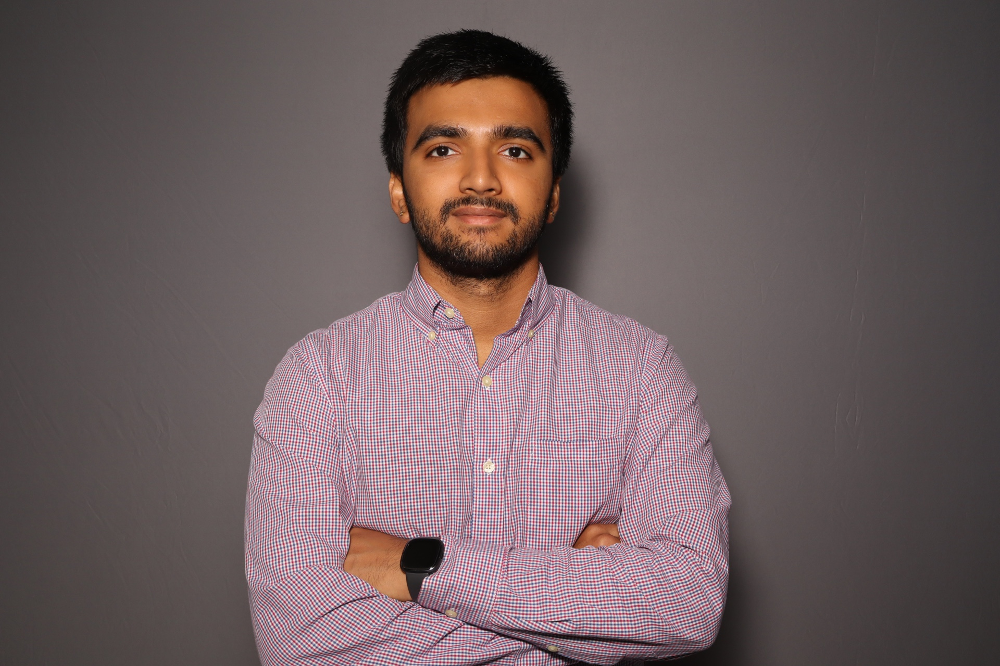

I'm Siddharth Padithaya, an Information Science student at the University of Maryland with experience in IT support, software development, and web technologies. I enjoy solving technical problems, building user-focused applications, and working on projects that combine technology with real-world impact.

IT Support • Software Development • Web Technologies
A little bit about who I am and what I enjoy working on.
Currently pursuing a Bachelor of Science in Information Science at the University of Maryland, College Park. Recipient of the HACSI, UPAKAR, NFIA, and OMSE scholarships.
Currently working at Terrapin Tech within the University of Maryland Division of IT, providing advanced hardware and software support, system imaging, OS reinstallation, and ServiceNow ticket management.
My goal is to continue growing as a developer and IT professional while building impactful systems, improving user experiences, and contributing to innovative technology projects.
Some projects and ideas I've worked on.
A parking availability app designed to help UMD students find open parking spots more easily through community reporting.
Developed a Java-based social media simulation featuring tweeting, liking, retweeting, following systems, and internal timeline management using object-oriented programming principles.
Co-developed a web-based employee status reporting system during my internship at International Software Systems, improving communication and productivity for employees, project managers, and administrators.
Technologies and tools I work with.
Feel free to reach out for collaboration, projects, or just to connect.
kpsid@terpmail.umd.edu